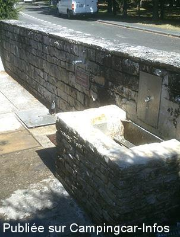
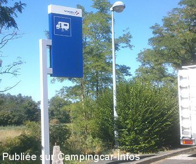

AA = Aire de services sur autoroute de :
.A10 Paris=>Bordeaux SAINT LEGER
(N° 12)
Accès/adresse :
A 10
Sens Paris/Bordeaux
Sens Paris/Bordeaux
Latitude : (Nord) 45.61036° Décimaux ou 45° 36′ 37′′
Longitude : (Ouest) -0.60219° Décimaux ou 0° 36′ 7′′
Tarif : Gratuit
Type de borne : Artisanale
Services :


Autres informations :

Le 12/08/2013 par lelito

Le 12/08/2013 par lelito
Aucun commentaire pour le moment